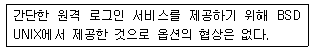
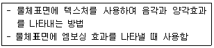
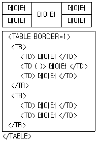
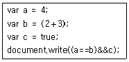
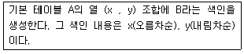
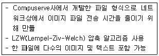
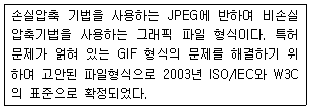

멀티미디어콘텐츠제작전문가 (2017-03-05 기출문제)
1과목: 멀티미디어개론
1. IEEE 802.16에서 사물지능통신(M2M)을 지원하기 위해 개발된 표준은?
- IEEE 802.16c
- IEEE 802.16k
- IEEE 802.16x
- IEEE 802.16p
(정답률: 65%)

2. 40비트와 128비트의 키를 가진 암호화 통신을 할 수 있게 해주는 SSL(Secure Socket Layer)의 서비스 포트번호는?
- 443
- 80
- 25
- 3389
(정답률: 80%)
3. Unix 시스템에서 서버에 현재 Login한 사용자의 정보를 알 수 있게 해주는 명령어는?
- ping
- ftp
- finger
- rlogin
(정답률: 74%)
4. RAID 종류 중 데이터를 찾거나 읽을 때 속도를 빠르게 하는 데 목적을 두는 것은?
- RAID 레벨 61
- RAID 레벨 51
- RAID 레벨 41
- RAID 레벨 0
(정답률: 63%)
5. IP-TV에 대한 설명으로 틀린 것은?
- 초고속 광대역 네트워크를 통해 서비스 되는 디지털 채널 방송이다.
- 양방향의 데이터 서비스를 제공한다.
- 셋톱박스를 통하여 디지털 비디오 레코딩 기능 등 다양한 멀티미디어 기능을 제공한다.
- 필수 장비로 컴퓨터가 필요하다.
(정답률: 80%)
6. 스푸핑(Spoofing)에 대한 설명으로 틀린 것은?
- 정당한 사용자로 위장하여 시스템에 침투하는 방법 이다.
- DNS 스푸핑은 실제 DNS 서버보다 빨리 공격 대상 에게 DNS Response 패킷을 보내 공격대상이 잘못된 IP 주소로 웹 접속을 하도록 유도한다.
- ARP 스푸핑은 MAC 주소를 속이는 것이다.
- Land처럼 ICMP 패킷을 이용한다.
(정답률: 66%)
7. IP 주소 241.1.2.3에 대한 설명으로 맞는 것은?
- netid는 241이다.
- 클래스(class)는 E이다.
- hostid는 1.2.3이다.
- 서브넷 마스크는 0.0.0.0이다.
(정답률: 67%)
8. Eureka-174을 기반하여 우리나라에서 개발한 지상파 디지털 멀티미디어 방송 표준은?
- T-DMB
- ATSC
- DVB-T
- IBOC
(정답률: 73%)
9. IPv6에 대한 설명으로 틀린 것은?
- 네트워크의 고속화와 그래픽과 비디오 등의 혼합된 미디어 전송요구에 부합되도록 설계되었다.
- 128비트의 IP주소 크기를 가지고 있다.
- 암호화와 인증 옵션들은 패킷의 신뢰성과 무결성을 제공한다.
- 다섯 개의 클래스로 구성된 2 레벨 주소구조로 되어 있다.
(정답률: 70%)
10. 스마트폰 디지털카메라의 경우 실제 셔터는 없으나 셔터 효과음으로 카메라의 셔터를 대신하는데 이와 같이 사용자 경험을 모방하여 디자인하는 것을 의미하는 것은?
- 일루미름
- 스큐어모프
- 아두이노
- 데이터 캡
(정답률: 73%)
11. CRT모니터에 대한 설명으로 틀린 것은?
- 전자총에 의해 발사된 전자빔이 편광판 사이를 지나 섀도우 마스크 금속판을 걸쳐 형광물질에 도달한다.
- 컬러 CRT는 빛의 삼원색인 RGB를 사용하여 화면에 표시한다.
- 장시간 이용 시 눈의 피로가 발생한다.
- 해상도가 낮을수록 선명도가 좋다.
(정답률: 85%)
12. 다음을 무엇에 대한 설명인가?

- MIME
- RLOGIN
- HTTP
- POP
(정답률: 71%)
13. 영국 오디오 프로세싱 테크놀로지 사에서 개발하였고, MP3 보다 연산량이 적어 전력이 적게 소비되며, 압축 효율이 높아 CD와 같은 음질을 제공하는 오디오코덱은?
- AC3
- XVID
- DTS
- APTX
(정답률: 57%)
14. 운영체제에서 한 프로세스가 자원을 점유한 상태에서 세마포어 변수를 변경한 후 비정상적인 상태로 종료 되었을 때 일어날 수 있는 상황은?
- Late
- Mapping
- Deadlock
- Restore
(정답률: 80%)
15. 정지향성 스피커는 어떤 특성을 개선하기 위한 것인가?
- 핑크잡음
- 지향각
- 진폭
- 도플러효과
(정답률: 69%)
16. OSI 7계층에서 이더넷과 PPP를 지원하는 계층은?
- 표현 계층
- 응용 계층
- 세션 계층
- 데이터링크 계층
(정답률: 70%)
17. 해시(Hash) 함수에 대한 설명으로 틀린 것은?
- 임의 길이의 메시지를 일정길이(120비트, 160비트 등) 로 출력하는 함수이다.
- 함수가 양방향인 경우를 메시지 다이제스트라고 한다.
- 메시지의 정확성이나 무결성을 중시하는 보안업무에 사용한다.
- 메시지의 무결성이나 사용자 인증을 사용하는 전자서명에 유효하다.
(정답률: 65%)
18. TCP/IP 통신에서 HTTPS에 사용되는 프로토콜은?
- IPsec
- SSL
- L2TP
- PPTP
(정답률: 63%)
19. 웨이블릿 변환에 기초한 래스터 이미지 압축 기술은?
- H.263
- MPEG-7
- GIF
- JPEG2000
(정답률: 70%)
20. 아날로그 이미지를 디지털화 하는 과정에서 이미지의 위치 값을 나타내는 연속적인 데이터를 일정간격으로 나누어 불연속적인 위치데이터로 바꾸는 작업은?
- 표본화
- 앨리어싱
- 평준화
- 필터화
(정답률: 64%)
2과목: 멀티미디어기획및디자인
21. 멀티미디어 마케팅에 대한 설명으로 틀린 것은?
- 마케팅의 목적과 소비자 집단을 명확하게 규명한다.
- 성공적인 판매를 위해서는 유통 판매점 방문 및 통신판매, 강습회 등의 기회를 마련한다.
- 소비자 집단의 특성에 따라 홍보와 판매장소 방법을 선택한다.
- 무조건 다수의 사람들에게 홍보 및 판매 전략을 적용해야 한다.
(정답률: 81%)
22. 컴퓨터 그래픽스에 대한 설명으로 거리가 가장 먼 것은?
- 실물 그 자체의 재현은 물론 명암, 질감, 색감, 형태 등을 의도하는 대로 자유롭게 바꿀 수 있다.
- 제작물은 디자이너의 능력, 감각 등을 통해 무한한 이미지 창출은 물론 영구적인 보존이 가능하다.
- 제작 시 세밀한 부분이나 작은 시간의 차이도 표현할 수 있지만 수정이 어렵고 비용이나 시간이 많이 든다.
- 인쇄 출력 시 모니터의 색상과 실체 출력 색상이 다르게 나오므로 색 보정이 필요하다.
(정답률: 73%)
23. 게슈탈트의 심리법칙 중 윤곽선이 완전히 연결되어 있지 않아도 같은 형태로 방향성을 지니고 있다면 연결 되어 보이는 것을 무엇이라고 하는가?
- 폐쇄성의 원리
- 연속성의 원리
- 유사성의 원리
- 근접성의 원리
(정답률: 63%)
24. 웹 사이트 구축 시 사용되는 메뉴 유형 설명이 잘못된 것은?
- 자바스크립트를 사용하여 롤오버 버튼을 제작할 수 있다.
- 플래시로 메뉴를 만들면 다양한 효과가 첨가된 메뉴 제작이 가능하다.
- 이미지 탭으로 제작된 메뉴는 이미지 이외의 추가적인 코드에 대한 지원이 필요 없어 시간소요가 적다.
- 텍스트 메뉴는 용량이 적어 속도가 빠르다.
(정답률: 77%)
25. 물체가 가지고 있는 질감을 표현해 주기 위해 평면에 무늬를 삽입하는 것처럼 표현하고 텍스처나 패턴을 표면에 부여하는 방법을 질감처리(Mapping)라 한다. 다음의 매핑 처리는 무엇을 설명하는가?

- 텍스처 매핑
- 솔리드 텍스처 매핑
- 범프 매핑
- 패턴 매핑
(정답률: 69%)
26. 사용자가 그래픽을 통해 컴퓨터와 정보를 교환하는 작업 환경을 말하는 것으로 키보드를 이용한 명령어 입력 대신 마우스 등을 이용하여 화면의 메뉴 중에서 하나를 선택하여 작업하는 방식은?
- Anchor
- GUI
- Hypermedia
- Mapping
(정답률: 81%)
27. 그래픽 확장자에 대한 설명으로 잘못된 것은?
- EPS: 프린터에 그래픽 정보를 보내기 위해 등장한 Postscript 언어를 활용한 포맷이다.
- AI: Illustrator의 기본 포맷으로, Photoshop 등의 그래픽 소프트웨어에서도 읽을 수 있다.
- SWF: 어도비 플래시 파일로 웹에 퍼블리시 시키기 위한 확장자이다.
- GIF: 웹에 올릴 수 있는 확장자로 투명 효과를 지원 하지 않는다.
(정답률: 65%)
28. 웹 디자인 시 고려하여야 할 사항들에 대한 설명으로 옳은 것은?
- 웹 페이지에 가능한 많은 정보를 제공한다.
- 각각의 페이지마다 독창성을 살려 컬러나 전체적인 이미지 톤, 레이아웃 등에 변화를 주어야 한다.
- 웹 디자인이 중심이 되기보다는 콘텐츠를 부각시킬 수 있는 디자인이 되어야 한다.
- 웹 페이지의 다운로드 속도를 빠르게 하기 위해 메뉴나 이미지 속의 타이포그래피도 웹브라우저에 디폴트로 지정된 폰트를 활용하는 것이 좋다.
(정답률: 75%)
29. 칸딘스키(Kandinsky)가 제시한 형태 연구의 3가지 요소가 아닌 것은?
- 육각형
- 사각형
- 삼각형
- 원형
(정답률: 78%)
30. 디자인의 요소로 가장 거리가 먼 것은?
- 형태
- 색
- 재료
- 질감
(정답률: 71%)
31. 먼셀(Munsell) 색채계의 표기법은?
- H/VC
- HC/V
- HC-V
- HV/C
(정답률: 73%)
32. 디자인의 원리 중 Symmetry에 대한 설명으로 맞는 것은?
- 자연물 등의 대칭된 형태에서 느낄 수 있다.
- 길이의 비례 관계를 말한다.
- 하나의 직선이나 곡선 또는 단순형태에서는 느낄 수 없다.
- 변화 속에서 통일감을 얻는다.
(정답률: 67%)
33. 색채의 삼속성에 관한 설명으로 옳지 않은 것은?
- 색상은 물체의 표면에서 선택적으로 반사되는 색파장의 종류에 의해 결정된다.
- 빛이 반사하는 양에 따라 색의 밝고 어두운 정도를 느끼는 것이 명도이다.
- 색파장이 얼마나 강하고 약한가를 느끼는 것이 채도이다.
- 최고 채도의 순색은 모두 같은 명도를 갖는다.
(정답률: 70%)
34. 하나의 도형 속에서라도 각기 서로의 관계에 의해 생기는 시각의 움직임의 한 형식으로, 공통요소가 연속 적으로 되풀이 되는 리듬의 변화에 속하지 않는 것은?
- 반복
- 대칭
- 점이
- 강조
(정답률: 53%)
35. 미술사조에 나타난 색채의 특징 중 틀린 것은?
- 큐비즘(Cubism): 입체파라고 불리며 화려하고도 어두운 톤과 강한 명암대비를 사용하였다.
- 데스틸(De Stile): 순수한 원색으로 제한되어 있으며 강한 원색대비가 특징이다.
- 아방가르드(Avant Garde): 급진적 변화와 폭넓은 색채를 사용하였다.
- 아르데코(Art Deco): 부드러운 색상과 독특한 패턴을 사용하였다.
(정답률: 56%)
36. 슈브뢸(M. E. Chevreul)의 색채조화론에 대한 설명으로 틀린것은?
- 보색대비에 따른 조화는 명도대비와 함께 고려하면 극적인 효과를 얻을 수 있다.
- 등간격 3색 조화는 부드러운 느낌을 얻을 수 있다.
- 색상에 따른 조화는 명도가 비슷한 여러 색들을 동시에 배색했을 때 얻을 수 있다.
- 인접보색대비에 따른 조화는 단순보색대비보다 고급스러운 조화를 얻을 수 있다.
(정답률: 57%)
37. 레터링에 대한 설명으로 거리가 가장 먼 것은?
- 글자를 쓴다는 의미이다.
- 가독성이 부족하더라도 조형성이 중요하다.
- 글자를 새기거나 박음질하는 것도 포함된다.
- 이미 만들어진 글자체를 정확하게 옮기는 기술도 포함된다.
(정답률: 77%)
38. 출판물의 전체적인 흐름을 알 수 있도록 내용 요소, 조형적 요소들을 배치하고 구성하는 작업을 지칭하는 용어는?
- 포맷(Format)
- 마진(Margin)
- 라인업(line-up)
- 프로토타입(Prototype)
(정답률: 72%)
39. 디자인의 역사 중 공예개량운동인 미술공예운동을 전개한 사람은?
- 월리엄 모리스
- 설리번
- 브뤼셀
- 에밀 갈레
(정답률: 77%)
40. 인터페이스 디자인을 위한 조명 원리로 거리가 가장 먼 것은?
- 통일
- 조화
- 절제
- 균형
(정답률: 75%)
3과목: 멀티미디어저작
41. EMP 테이블의 데이터와 테이블 구조 정의 모두 삭제 시 옳은 것은?
- DROP TABLE EMP;
- DELETE EMP;
- DELETE EMP WHERE 0 ＞＜ 1;
- TRUNC TABLE EMP;
(정답률: 67%)
42. 그림과 같은 형태의 표를 만들기 위해 ( )에 들어갈 HTML 코드는?

- ROWSPAN=2
- COLSPAN=2
- HEIGHT=2
- WIDTH=2
(정답률: 57%)
43. AJAX에 대한 설명으로 틀린 것은?
- 비동기 자바스크립트와 XML의 줄임말이다.
- JSON 형태의 데이터를 사용하여 통신한다.
- 페이지의 필요한 부분을 부분적으로 갱신하는 기술 이다.
- HTTP 서버와 통신할 때마다 페이지 전체를 리후레시(Refresh) 해야 한다.
(정답률: 69%)
44. 데이터베이스의 상태를 변환시키기 위해 논리적 기능을 수행하는 하나의 작업 단위는?
- 프로시저
- 모듈
- 트랜잭션
- 도메인
(정답률: 72%)
45. 자바스크립트 코드의 실행 결과로 옳은 것은?

- a==b&&c
- false
- 4==5&&false
- true
(정답률: 69%)
46. 클래스 간 계층관계에 근거하고 클래스 간 속성과 연산을 공유하는 개념은?
- 캡슐화
- 상속성
- 정보은닉
- 추상화
(정답률: 67%)
47. HTML5 스타일시트에서 시작하는 첫 번째 글자를 대문자(영문)로 변환하는 표기법으로 맞는 것은?
- string-replacement:uppercase;
- text-transform:capitalize;
- text-transform:lowercase:
- style-sheet:cap;
(정답률: 74%)
48. HTML5에서 동일 사이트 내 문서나 다른 사이트의 문서로 연결 되는 링크를 정의하는 태그는?
- ＜nav＞
- ＜area＞
- ＜fieldset＞
- ＜hgroup＞
(정답률: 71%)
49. 다음 SQL 명령으로 옳은 것은?

- CREATE INDEX B ON A( x , y DESC) ;
- CREATE INDEX B ON A( x , y ) ;
- CREATE INDEX A ON B( x DESC , y DESC) ;
- CREATE INDEX A ON B( x DESC , y ) ;
(정답률: 69%)
50. XML문서를 트리구조로 표현하고 최상위 노드부터 최하위 노드까지의 모든 노드들과 속성, 데이터를 추출할 수 있는 경로를 기술하는 언어는?
- XLS
- XPath
- XLink
- XQuery
(정답률: 49%)
51. HTML의 ＜video＞ 태그의 poster 속성은?
- 동영상 넓이 지정
- 재생할 동영상이 로드 중이거나 버퍼링 중일 때 보여줄 이미지 URL 지정
- 동영상 높이를 지정
- none, metadata, auto 값 설정
(정답률: 81%)
52. 객체지향 패러다임의 구성요소가 아닌 것은?
- 객체
- 클래스
- 전역변수
- 메소드
(정답률: 70%)
53. HTML5의 콘텐츠 타입 중 문서의 표현이나 성격을 규정하는 요소로 보통 Head 영역에 위치하는 것은?
- Flow
- Embeded
- Phrasing
- Metadata
(정답률: 74%)
54. XML 스키마에 대한 설명으로 틀린 것은?
- DOM 기술을 통한 조작 가능
- DTD보다 많은 시스템 정의 타입 지원
- 단순 타입을 기초로 문서작성자가 원하는 임의의 복합 타입 정의 가능
- Namespace를 제공하지 않음
(정답률: 65%)
55. class는 객체지향 프로그램에서 어떤 특징에 해당되는가?
- 구조화
- 공유화
- 추상화
- 분리성
(정답률: 49%)
56. XML 문서작성자가 현재 XML 문서가 어떤 마크업 언어로 작성된 것인지를 XML 문서를 해석하는 측에 알려줄 목적으로 정의하는 것은?
- DOCTYPE
- XLS
- STD
- SYSTEM
(정답률: 61%)
57. 자바스크립트 변수 선언으로 틀린 것은?
- var a = 5
- var _b = 30
- var ab = 87
- var catch = “well come”
(정답률: 61%)
58. 데이터베이스에서 튜플 관계 해석을 기초로 한 데이터 언어는?
- SQL
- DML
- DDL
- QUEL
(정답률: 45%)
59. 데이터베이스에서 릴레이션의 특성이 아닌 것은?
- 튜플의 유일성
- 튜플의 순서 유지
- 어트리뷰트의 원자값
- 어트리뷰트의 무순서
(정답률: 58%)
60. DOM에 대한 설명으로 틀린 것은?
- 문서의 구조, 스타일, 이벤트 등에 접근을 제공하기 위한 응용프로그램 인터페이스이다.
- SAX 파서에서 얻어진 결과를 사용하여 문서 객체 모델을 트리방식으로 구성한다.
- XML문서를 트리구조로 해석하고 노드를 조작하여 XML 문서를 처리할 수 있도록 한다.
- 특정 응용 프로그램에 종속되어 인터넷 상의 자원을 찾는 방식에 활용된다.
(정답률: 56%)
4과목: 멀티미디어제작기술
61. 3차원으로 구성된 캐릭터에 움직임을 부여하는 애니메이션 기법으로 인간의 몸에 센서를 부착하거나 적외선 등을 이용하여 인간의 움직임을 디지털로 기록하여 캐릭터의 움직임과 연동시키는 기법은?
- 키 프레임
- 스퀴시와 밴드
- 모션캡쳐
- 로토스코핑
(정답률: 79%)
62. 다음의 디지털 오디오 파일 형식들 중, MPEG를 이용한 압축방식을 적용하고 있는 것은?
- MP3
- WAV
- AU
- VQF
(정답률: 71%)
63. 확장자의 종류가 다른 하나는?
- MOV
- MP3
- MID
- WAV
(정답률: 64%)
64. 그래픽 파일 포맷 중 다음에서 설명하는 파일포맷은?

- GIF
- JPEG
- WMF
- TIFF
(정답률: 70%)
65. 다음에서 설명하는 파일포맷은?

- BMP
- PNG
- MPEG
- TIFF
(정답률: 73%)
66. ATSC 디지털 TV 표준 방식의 영상신호 압축방식은?
- MPEG - 1
- MPEG - 2
- MPEG - 3
- MPEG - 4
(정답률: 54%)
67. PC의 출력신호를 방송규격에 알맞게 NTSC 신호로 변환하는 장치는?
- TSC(Television Signal Converter)
- Scan Converter
- TBC(Time Base Corrector)
- Side Crank
(정답률: 59%)
68. 소음에 의해서 음성의 명료도가 저하되는 현상은?
- 간섭
- 마스킹
- 회절
- 반사
(정답률: 70%)
69. 3D 오브젝트를 변형하기 위한 단위가 아닌 것은?
- Vertex
- Edge
- Polygon
- Spline
(정답률: 55%)
70. 소리의 고저는 높이, 음정, 파동의 진동수 등으로 표현된다. 여기에 사용되는 단위는?
- Hz
- dBm/w
- %
- W
(정답률: 80%)
71. Key Light에 의해 생기는 어두운 부분을 수정하기 위한 조명이며 베이스 라이트와 겸용되는 경우의 조명은?
- Back Light
- Touch Light
- Fill Light
- Horizont Light
(정답률: 64%)
72. 3D 형상 모델링의 종류가 아닌 것은?
- 캡처 모델링(Capture Modeling)
- 솔리드 모델링(Solid Modeling)
- 표면 모델링(Surface Modeling)
- 와이어 프레임 모델링(Wire Frame Modeling)
(정답률: 61%)
73. 셀(Cel) 애니메이션과 관련이 가장 먼 것은?
- 셀은 셀룰로이드(Celluloid)를 의미한다.
- 투명의 셀지에 선화를 그리고, 뒷면에 채색하는 방식이다.
- 한 장의 셀에 배경과 캐릭터를 함께 그리는 방식이다.
- 여러 개의 셀이 몇 겹의 층을 이루어 하나의 화면을 만들어 낸다.
(정답률: 65%)
74. 화면에서 검은 부분과 흰 부분 사이의 강도차를 의미하는 것은?
- 해상도
- 화질
- 색도
- 대비
(정답률: 68%)
75. 다음 중 디지털 영상 편집 목적으로 가장 거리가 먼 것은?
- NG부분의 제거
- 정보의 압축
- 의미의 심화
- 영상의 백업
(정답률: 72%)
76. 같은 주파수 2개의 위상차가 시간과 함께 변화하지 않을 때, 2개의 광파가 겹쳐 빛의 세기가 강해지거나 약해지는 현상은?
- 분산
- 간섭
- 편광
- 회절
(정답률: 58%)
77. MPEG - 1 Audio의 규격 중 압축률이 1:10 ~ 1:12 정도로 우수하며 음을 주파수 대역별로 나누어 이를 압축하는 방법을 사용하는 규격은?
- MPEG Audio Layer - 1
- MPEG Audio Layer - 2
- MPEG Audio Layer - 3
- MPEG Audio Layer - 4
(정답률: 49%)
78. 사람의 가청주파수 대역은?
- 2Hz ~ 20Hz
- 20Hz ~ 2KHz
- 2KHz ~ 20KHz
- 20Hz ~ 20KHz
(정답률: 56%)
79. 래스터(Raster) 출력장치에서 생성한 직선이나 그림은 출력장치가 갖는 해상도의 한계로 인하여 물체 경계선에서 계단현상이 나타나게 되는데 이러한 경계선을 부드럽게 보이도록 하기 위한 처리방법으로 가장 올바른 것은?
- 샤프닝(Sharpning)
- 크리스프닝(Crispening)
- 고주파필터링(Highpass Filtering)
- 블러링(Blurring)
(정답률: 76%)
80. GIF 형식의 파일에서 사용 가능한 최대 색상 수는?
- 24
- 28
- 216
- 232
(정답률: 70%)